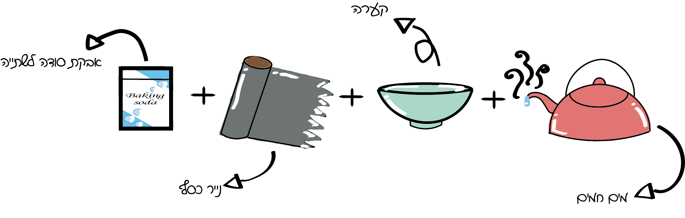
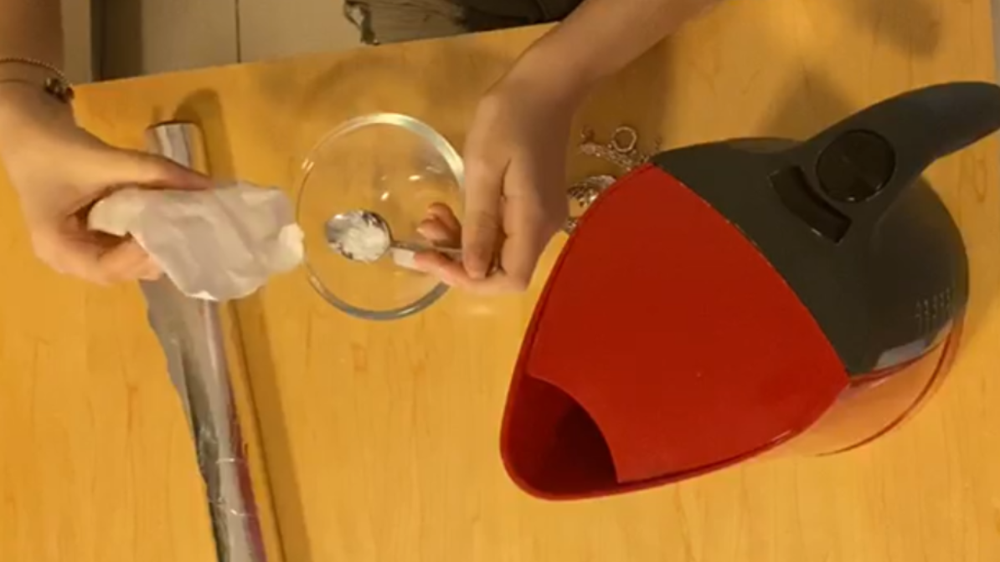
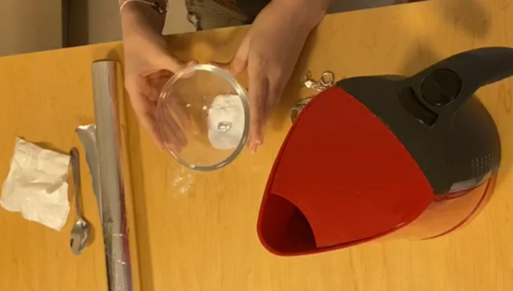
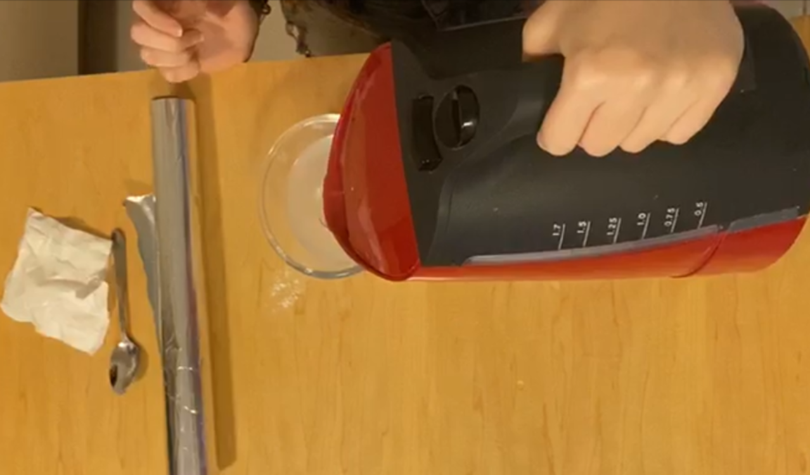
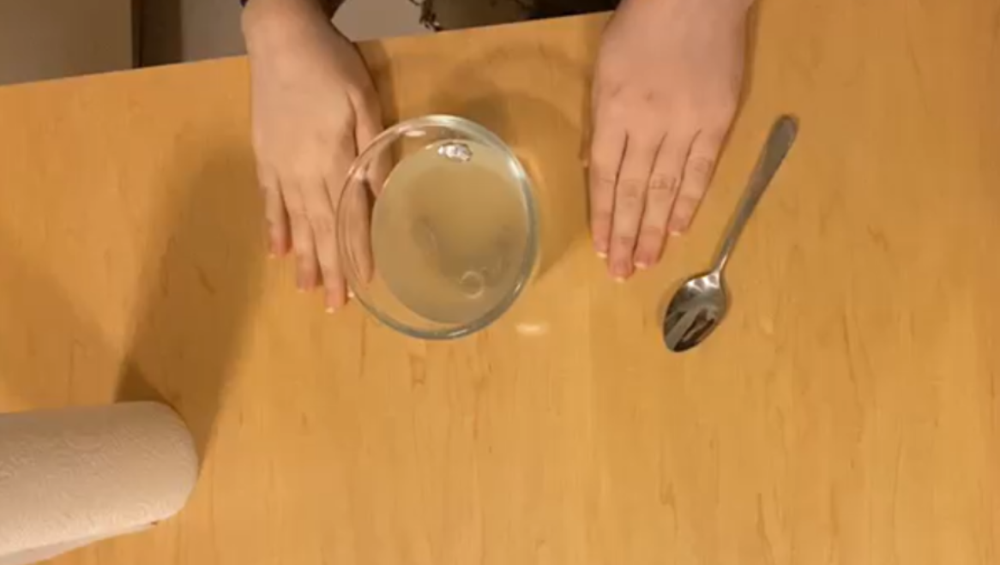
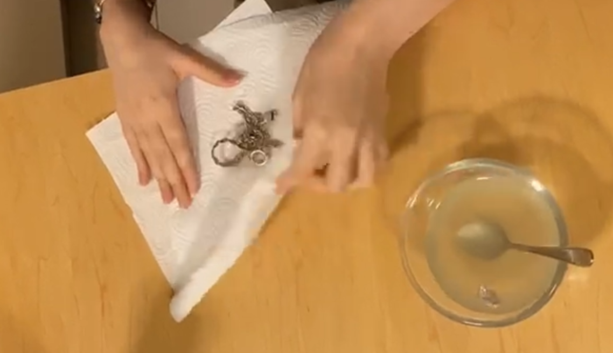
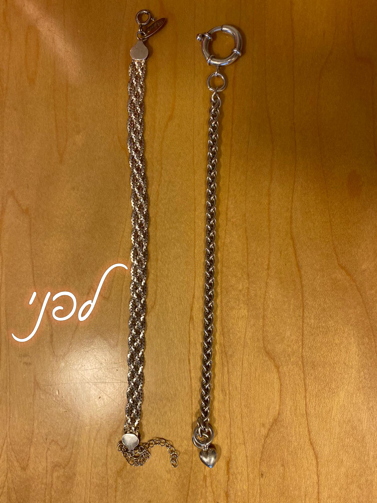
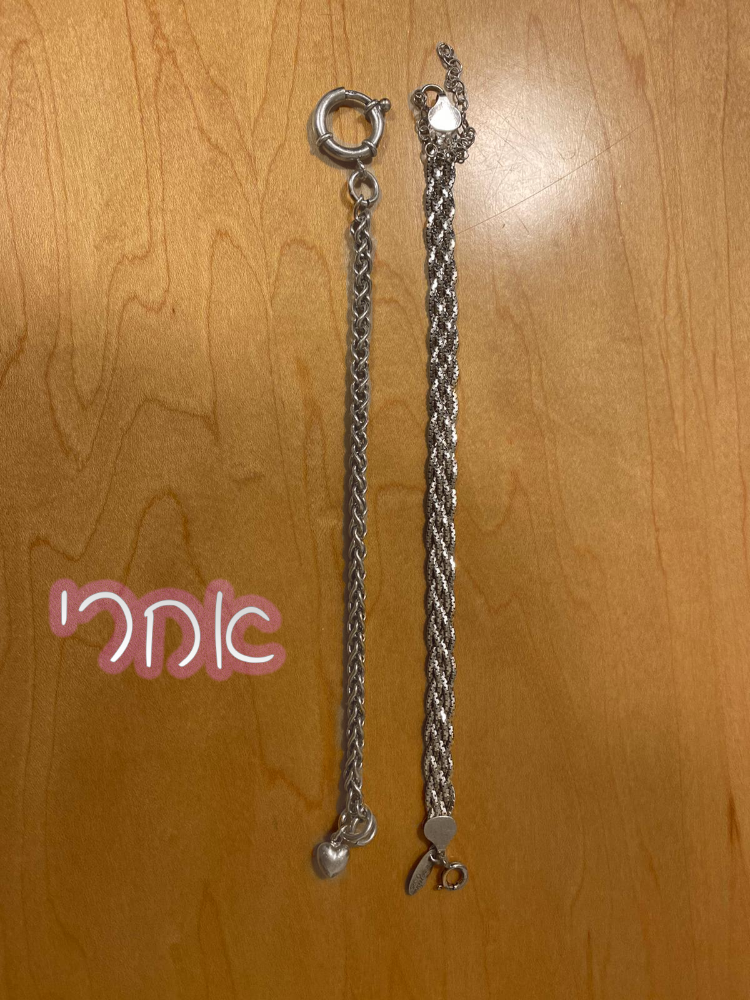

מדריך לניקוי התכשיטים

תכשיטים הם פריט שאנו עונדות באופן יומיומי במשך שנים, עם הזמן יש לתכשיטים נטיה להשחיר או לאבד את הברק שלהם. אבל אל דאגה, סידרנו לכן אחלה מדריך שיחדש לכם את התכשיטים במקסימום תוצאה ומינימום מאמץ.
אז מה צריך?

שלב 1:
מוסיפים לקערה שתי כפיות אבקת סודה לשתייה.
שלב 2:
מגלגלים כדור נייר כסף ומוסיפים לקערה.
שלב 3:
מוסיפים כחצי כוס של מים חמים, מכניסים את התכשיט לקערה ומערבבים.
שלב 4:
ממתינים כ5-10 דק ומוציאים את התכשיטים מהקערה.
שלב 5:
מנגבים את התכשיטים עם מטלית נקייה.
וזהו! קיבלתן תכשיט מבריק ונקי! והנה התוצאות:
 